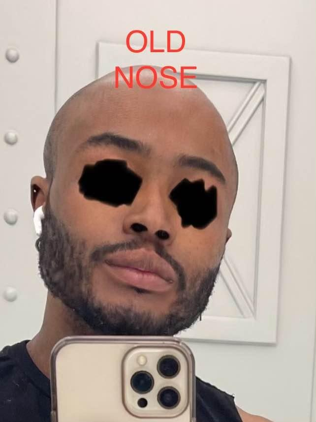

Introduction
Dr. Selim Turan in his office
Dr. Selim Turan is a well-known surgeon in Turkey whose work is frequently praised by dedicated promoters across WhatsApp groups, Reddit, and Google reviews. However, the high volume and severity of complaints, particularly regarding ethics, patient care, and long-term outcomes, suggest that prospective patients should proceed with caution.
Many unhappy patients describe Turan as a surgeon who prioritizes his own aesthetic preferences and business interests over individual needs and well-being. Despite his popularity, he is on the botched list, with reported complications including bumps, dents, asymmetries, loss of turbinates, necrosis, infections, overly rotated tips, unconsented procedures, overly feminized results in male patients, and permanent functional damage such as breathing problems and structural deformities.
Patients frequently report being gaslighted, ignored, or dismissed when voicing concerns. Many are left emotionally distressed, financially burdened, and without proper aftercare. Revisions are allegedly inconsistently offered and usually require patients to cover hospital fees, only to usually end up with the same problem or new ones. We created this document to highlight the most commonly reported issues and help others make informed decisions.
⚠️ A Word On His Paid Supporters and Sycophants
This surgeon is surrounded by paid promoters and unhinged fans who have relentlessly attacked the authors and patients in this document—spreading lies driven by a baffling obsession with Turan. Block out the noise and focus on the real testimonials. You only get one nose and one face in this life—make your decisions based on truth, not allegiance to a surgeon.
Class of Issues
1. Dents and Bumps
Dents and bumps are among the most frequently reported aesthetic complications from Dr. Turan. Patients often mention visible irregularities on the bridge or sidewalls of the nose, including unnatural indentations, uneven surfaces, and unwanted dorsal humps.
These issues often result from excessive or uneven cartilage removal, poor structural support, or imprecise grafting techniques. In some cases, dents appear over time as swelling subsides or as a result of cartilage collapse, while bumps may be due to incomplete hump reduction or scar tissue. Many patients say these flaws were not present before surgery and contribute significantly to their dissatisfaction with the results.
2. Nostril Asymmetries
Nostril asymmetries are another common complaint among Dr. Selim Turan's patients and can stem from several surgical missteps. These include uneven alar base reductions, imprecise stitching, poor cartilage support, uneven tip projections or imbalanced cephalic trims. When one side is over-resected or not properly matched to the other, it can result in visible differences in nostril size, shape, or positioning especially noticeable from the basal (underside) view.
In many cases, patients reported that these asymmetries were present immediately after cast removal, suggesting surgical error rather than healing complications. Fixing nostril asymmetry often requires complex revision work, and if too much tissue was removed, it may be difficult or impossible to fully correct.
3. Unnecessary and Unconsented Alarplasties with Hypertrophic Scars
This surgeon is known to routinely perform the more aggressive weir (wedge and sill) alarplasty excisions, often with little regard for patient consent. Despite being an irreversible procedure, it is reportedly performed frequently, often without proper discussion or approval. In one case, a patient's nostrils were drastically reduced without consent, resulting in permanent disruption to their facial harmony and C-PTSD from the bodily violation. Two patients explicitly asked the surgeon not to perform alarplasty during their consultation, only to wake up and discover it had been done anyway.
Multiple other patients have developed hypertrophic and emotional scars from this procedure.
4. Multiple Surgeries a Day
The surgeon is known to routinely perform 3 surgeries per day, with multiple patients reporting that he handled 4 on their scheduled date and allegedly up to 5 on peak days. Following a rise in patient complications and cancellations, he has reportedly reduced his caseload to 2 surgeries per day. However, prospective patients are strongly advised to take this history into careful consideration. If he does more than 2 on your day, that is a red flag.
5. Necrosis & Infections
Several patients developed necrosis that led to open wounds, with no clear accountability or follow-up from the surgeon. In many instances, infection concerns raised by patients were dismissed or downplayed often until it was too late. Reported cases include infections in the columella and nostrils, along with at least one internal infection that led to recurring nosebleeds. One patient developed an infection months after surgery which, due to a lack of timely intervention, progressed into a severe structural deformity. Many more cases may remain undocumented or unacknowledged.
6. Unauthorized Publishing of Patients' Photos and Messages
Turan has been reported to share patients' photos on his social media without obtaining proper consent, and often refusing to remove them when asked. Patients report being gaslighted with lies such as "Instagram would ban me" or dismissive comments such as "who would even recognize you?" In multiple instances, the surgeon only took down photos after patients threatened legal action or negative reviews. He has also reportedly shared private messages with patients, breaching surgeon-patient confidentiality. In one case, he reportedly shared a photo of a patient on Instagram to give the impression they were satisfied, despite the patient having expressed dissatisfaction privately. These actions could raise concerns under Turkish data protection law, specifically KVKK Article 12, which protects personal data and requires explicit consent for its use.
7. Alleged Sexual Harassment
This surgeon has been known to hit on his female patients to the point of making them extremely uncomfortable. In one case, the night before a scheduled surgery, he inappropriately insisted on meeting a patient at her hotel, under the guise of it being unrelated to the consultation. When she asked why, he admitted it was personal, not medical, and made comments suggesting romantic or sexual interest. The patient, feeling cornered and alarmed, lied about being married in an attempt to deter him. She became so distraught that she went into surgery the next day terrified, stuffing tampons inside herself out of fear that he might sexually violate her while she was under anesthesia. This is not just unprofessional — it's predatory, and it has no place in medicine.
Messages of alleged sexually harrassment of female patient night before surgery
When he was confronted about this by another concerned patient, the surgeon allegedly tried to deflect by falsely claiming that the accuser was a gay man who had fallen in love with him. Rather than address the serious concerns being raised, he minimized the situation and dismissed the conversation entirely, saying he didn't care and that "logical people can understand." When the patient pressed for clarification to determine whether he could still trust him as a doctor, the surgeon coldly replied, "You should go another one," showing no interest in clearing his name or reassuring prospective patients.
Refusing to take accountability for alleged sexual harrassment
8. Unethical Behavior & Gaslighting
Dr. Selim Turan has been reportedly using intimidation and gaslighting tactics to silence patients who speak publicly about their negative experiences. Several former patients have described being threatened with legal action or subjected to emotional manipulation. In some cases, he allegedly tried to isolate them by saying things like, "The people you are speaking to don't care about you, let me and you solve this together," creating a false sense of trust while discouraging them from seeking outside support. As a result, many patients are hesitant to share their stories. Some fear that speaking out may lead to retaliation, including the possibility that Dr. Turan could contact other surgeons to interfere with their ability to receive necessary revisions or follow-up care. This climate of fear has left many feeling vulnerable and unsupported, even as they continue to suffer complications from their procedures.
Watch this example of threatening a patient after doing the opposite of what she asked
In addition to these concerns, Dr. Turan is also reported to upsell unnecessary cosmetic procedures, often targeting patients' insecurities. These upsells have included blepharoplasties, buccal fat removal, chin liposuction, and fillers, even when the patient did not seek them. In one widely shared incident, he reportedly contacted an influencer unsolicited to offer a nose correction, which resulted in public backlash in the comments section of the post
Instagram Video: Public backlash after unsolicited surgery offer
9. Negligence
Patients who expressed concerns before surgery often had their requests ignored. In one case, a patient clearly communicated their aesthetic preferences multiple times, yet received the opposite of what was agreed upon. When complications arose, patients were frequently dismissed, blamed, or pressured into paying for additional revisions.
The surgeon has also been known to offer revisions to upset patients far too early, in unsafe timeframes. In one case, a patient was offered a revision just one month after surgery, before full healing had occurred. Another patient developed an infection and nostril asymmetry that the surgeon repeatedly downplayed until necrotic skin developed. Instead of allowing the tissue to fully heal, he operated again within 6 months on tissue that was likely still compromised. As expected, the wound reopened, likely due to the dead or dying tissue being unable to hold sutures.
Concerningly, he performed a second alarplasty on the same area just one week later, further traumatizing already damaged skin without properly addressing the cause of the initial failure. He also ignored the functional risks of further narrowing the nostrils, which can severely impact breathing. During one of these operations, anesthesia reportedly failed, and the patient felt the pain of the procedure. They later had to seek help from a local ENT and are now left with serious skin and structural issues that will be difficult to correct.
10. Male Patients
Turan has a pattern of poor outcomes among male patients, and based on these cases, he may not be an ideal choice for male rhinoplasty candidates. 6 male patients ended up with issues ranging from wide, shapeless noses to noses that were overly feminine, rotated and unnaturally pointy without consent. Some were left with severe bridge deformities, uneven alarplasty work, and major breathing problems. These changes affected not only their appearance, but also their sense of ethnic and masculine identity.
One patient, for example, got results that went completely against their wishes, leading to a loss of ethnic and masculine identity, scar tissue discomfort, functional issues, and an alarplasty that removed way too much tissue with no care or precision. Most of these guys are now either stuck with permanent damage, overly feminine noses or need a highly complex revision that only a handful of surgeons can even attempt.
11. Biased Rhetoric within his Groups
Misleading narratives within the community often originate from promoters with ties to the surgeon, patients emotionally invested in justifying their decisions, and individuals financially committed to surgery who refuse to acknowledge risks. Stories of harm have been dismissed as mere rumors. Requests for proof of other patients' negative experiences often come from a place of personal bias rather than a genuine desire to understand the risks, as those seeking reassurance in statistics will rationalize their choices regardless of the evidence. While surgery is a personal decision, disregarding legitimate health concerns to avoid confronting one's own fears distorts reality. Due to the consistent pattern of complications, misleading assurances, inadequate post-operative care, and unwillingness to acknowledge errors, prospective patients should exercise caution. To truly understand the risks, speak with a patient needing revision.
12. Recurring Deformities and Functional Damage
Many patients have reported being left with over-rotated noses and unnaturally pointed nasal tips, with over a dozen patients reportedly experiencing similar nasal deformities. These issues often result in a loss of natural facial harmony and are widely believed to stem from the surgeon's repeated use of the same flawed techniques, regardless of individual anatomy or patient requests. Older patients have also described aggressive cartilage removal, excessive projection, and the use of tight interdomal sutures and shield grafts that lead to pinched tips, nasal collapse, and long-term breathing issues.
13. Failed Revisions and Long-Term Health Effects
Revision surgeries have frequently failed to correct the original mistakes, with some patients left worse off than before. Others were initially reassured that their issues were minor, only to discover more severe underlying problems later.
In addition to the physical consequences, several patients reported a decline in overall health after surgery, including chronic fatigue, sinus problems, disrupted sleep, and anxiety. These outcomes were compounded by poor aftercare and reported threats if patients shared their experiences.
Patient Testimonials
Patient 1
A patient shared a serious warning about their experience with Dr. Selim Turan, describing it as being botched. They originally went in to correct a deviated septum, only to come out of surgery with the same issue and additional complications. During a post-op cleaning about a week after surgery, a nurse used clamps that tore open their alar stitches, causing intense pain. The patient reported this to Dr. Turan, who scolded the nurse but refused to restitch the area. Once home, the wound reopened entirely, forcing the patient to seek emergency care where a local nurse had to perform new stitches. This resulted in scarring and broken blood vessels on one side of the nose.
The patient also reported poor hygiene and handling immediately after surgery. They described intense shaking from cold, bloody and unclean stitches, and the premature application of creams and rinses just hours after surgery. These practices were later revealed to be improper when compared to the more professional and sanitary care they received from a new surgeon. They were also left with a visible bump on the nasal bridge, which was dismissed by Dr. Turan at cast removal but remained a year later. The final result, including an elongated bridge, low tip, and uneven nostrils, looked nothing like the simulation they were promised.
Attempts to receive a refund were denied, and the patient felt the entire experience was rushed, cheap, and deeply unprofessional. They expressed frustration that Dr. Turan operates on multiple patients per day and that their case felt like it was handled in a factory-like manner. After undergoing a successful revision elsewhere, the patient urges others to avoid Dr. Turan, emphasizing how sharing this experience might help prevent others from enduring the same trauma.
Patient 2
At 6 months post-op, this patient is left with severe damage and emotional distress. They initially noticed nostril asymmetry but were told it was just swelling. When they requested surgical photos, they were only sent limited views, despite knowing others existed. Four days after surgery, they developed an infection that was neglected until it caused visible tissue damage, scarring, and a noticeable gap. Later, a second infection formed due to a non-dissolved suture. Their nostrils became increasingly uneven, the columella crooked, and healing was poor.
Feeling they had no other option, the patient returned to Turan for a revision. He performed a nostril reduction on damaged tissue, which made little difference. The stitches reopened within days due to necrosis, and the patient experienced the procedure fully because the anesthesia failed. Despite screaming in pain, the surgeon continued operating and even attempted to straighten the septum with tweezers without anesthesia. He blamed the complications on "bad genetics" rather than taking responsibility. A second nostril reduction was done just one week later on the same inflamed area.
After returning home, the stitches reopened again, and the patient was advised by local doctors not to proceed with further surgery due to the risk of necrosis. They are now left with permanent deformities and an open scar. Initially staying silent due to fear and intimidation, the patient chose to speak out in hopes of helping others avoid the same experience.
Patient 3
One male patient clearly requested only a refined bridge and a 90-degree tip while asking that his ethnic features be preserved. He specifically pleaded with Dr. Turan not to over-project or over-rotate the nose. Despite this, Turan reportedly ignored the patient's requests and took extensive liberties with the procedure. The result included significant over-projection, excessive rotation, and an irreversible alarplasty performed without consent. The patient was left with visible scarring, exacerbated by his ethnicity, along with a feminized nose that lacked harmony with his facial features, asymmetric nostrils, a crooked bridge, and partial collapse of the left nasal valve. The physical outcome has led to psychological distress and multiple rounds of trauma recovery.
To make matters worse, Turan posted the patient's photos on social media without obtaining consent. The comments were largely negative, reflecting the drastic nature of the result. Turan refused to remove the post until the patient began leaving negative reviews. He also reportedly shared private messages from this patient with others in an effort to defend himself.
OLD NOSE
NEW NOSE
Patient 4
The patient experienced a range of complications following rhinoplasty with Dr. Turan, resulting in both physical discomfort and emotional distress. Shortly after surgery, the patient reported intense pain that did not respond to standard painkillers, and they expressed concern about the lack of strong medication provided. They also experienced swelling, breathing difficulties, and suspected an infection. Over time, the patient began to feel that their nose appeared crooked, uneven at the tip, and that the nostrils were asymmetrical. Despite repeatedly expressing these concerns, they were often told everything was "normal" without being asked to provide photos or videos for proper assessment.
A few weeks post-op, the patient's discomfort intensified. They reported that the internal sutures appeared to be irritating the tissue, and they were uncertain whether the problem stemmed from swelling or deeper complications. At one point, the patient was informed by a specialist that their nose was "a disaster," describing it as not swollen but structurally crooked with nostril asymmetry. Breathing was still impaired, and the doctor suspected there may be an infection at the nasal tip. Additionally, the patient was told that one of their turbinates had been altered in a way that prevented it from functioning properly, further contributing to the breathing problem.
Emotionally, the patient described feeling overwhelmed, confused, and unsupported. They mentioned inconsistent aftercare instructions between Dr. Turan and his assistants, such as whether to wear the nasal retainer, which left them unsure of what to do. The patient noted that their condition seemed to worsen rather than improve over time, and they expressed fear that the situation might end in collapse. After waiting six years to undergo revision surgery, the patient felt disheartened by the complications.
Patient 5
The patient experienced a cascade of complications and deeply distressing outcomes following multiple procedures performed by Dr. Selim Turan. One of the central complaints was the placement of multiple sharp structural grafts—including a crooked shield graft —in the nasal tip. These grafts resulted in a visibly angular, overly projected tip that extended past the columella. Since the surgery multiple rhinoplasty specialists have confirmed these grafts were poorly suited to the patient's anatomy, particularly given naturally thin skin.
Another major concern was that the patient underwent alarplasty without informed consent. This procedure had not been requested or discussed, and the patient only became aware of it after seeing changes in their post-operative appearance and reviewing surgical documentation. The patient also experienced TWO nasal infections after this surgery. Selim Turan denied that the patient had an infection however the patients local physician was able to confirm the infection instantly and get the patient started on antibiotics to clear the infection.
Finally, the patient was left with a botched upper bleph consisting of atrophic, hypertrophic, and dog ear scars. Multiple oculoplastic surgeons have confirmed that Selim Turan had absolutely no clue what he was doing while performing this bleph. Too much skin was removed on such a young patient and the sutures were the wrong type of sutures to use on such delicate eye skin. The patient also needed punctal plugs inserted because the aggressive skin removal left them with the inability to fully close their eyes and retain enough moisture in the eyes to function on a day to day basis. These complications left the patient initially extremely suicidal, emotionally and physically affected, and they expressed a combination of anger, helplessness, and disbelief. They stated that they would never have allowed Dr. Turan to operate had they known what the outcomes would be, and that it is "the biggest mistake of their life".
Patient 6
The patient experienced multiple complications following rhinoplasty performed by Dr. Turan. At nearly 7 months post-op, they reported dissatisfaction with the appearance of the nasal tip, describing it as unnaturally sharp and asymmetrical, appearing noticeably different from one side to the other. They also noted a prominent supra-tip break, which contributed to an uneven and unintended nasal contour. The patient stated that the nasal tip was rotated without their consent, deviating from the aesthetic goals they had discussed with the surgeon, and noted that the tip grafts were improperly placed, resulting in a crooked and asymmetric appearance. While they acknowledged some aspects of the result were acceptable, the asymmetry, unnatural shape, and unauthorized tip rotation caused persistent frustration.
Concerns also arose regarding a steroid injection administered during recovery. Although the injection was explained as necessary due to thick skin, the patient believed their skin was actually thin, citing their ability to feel bone through the skin even prior to surgery. They also reported being prescribed Accutane in a seemingly haphazard manner. These discrepancies led the patient to question whether the treatment approach was appropriate for their anatomy and whether it may have contributed to the complications they experienced.
In addition to nasal concerns, the patient reported scarring issues. The nose developed uneven healing patterns, with a hypertrophic scar on one side and an atrophic scar on the other. Despite repeatedly reaching out to Dr. Turan’s team, the patient received only generalized reassurances and was consistently told to wait. Over time, the lack of direct engagement led to increasing frustration and a growing sense of neglect in how their outcome was managed.
Patient 7
Patient presented with alarplasty scars that were visible right from the table pic and persisted as hypertrophic scars.
Patient 8 - Direct Quote
⛔️🚫URGENT WARNING⚠️‼️
⚠️I urge everyone to err on the side of caution. This is not just a review—it's a warning. What happened to this patient at the hands of this surgeon was not just a surgical failure, it was a profound violation of trust, identity, and bodily autonomy. This is being shared to prevent anyone else from falling victim to what she endured.
🚩From the very beginning, the red flags were there. The surgeon was aggressive, manipulative, and dismissive of her boundaries. She came to him with a simple request: to slim the bottom part of her nose. She was crystal clear, she did not want to change her side profile, and she told him explicitly that she wouldn't go through with the surgery unless he could guarantee that. Instead of respecting that, he pressured her into accepting a drastically different, upturned, scooped profile: the only type of nose he seems capable of doing. He even morphed photos of her face to convince her, completely ignoring her refusal. She never gave consent for these changes, yet he performed them anyway.
👹This man imposes his own narrow, Eurocentric beauty standards, proudly stating that Northern European noses are the ideal. As a Middle Eastern woman, her ethnic features were not only dismissed, they were surgically erased. He shamelessly told her that his only difficult patients were her and another ethnic individual, despite having problematic cases from all backgrounds. His racism was blatant and disturbing, reflecting a deeper cultural prejudice against Arabs in Turkey, fueled by propaganda and Western idolization.
🤒What followed was physical and psychological devastation. As soon as the cast came off, she knew something was deeply wrong. She had panic attacks on the flight home. Seven days after surgery, she removed her tape and saw the full extent of what he had done. Her bridge was shaved down without permission. Her nostrils were uneven. Her natural structure was gone. Her left turbinate had been removed, and her internal nasal valve had collapsed. She could no longer breathe comfortably. Her nose was dry, painful, and completely foreign to her.
🤥🦴A bulky, jagged septal extension graft now presses painfully against her skin—visible, uneven, and improperly placed. This wasn't just poor aesthetic judgment; it was structural incompetence. Multiple reputable surgeons she has since consulted confirmed the irreversible damage: a missing turbinate, internal valve collapse, and visible graft distortion.
😵He performs up to four surgeries a day, and post-op care was practically nonexistent. The nurses barely followed up, and he only came by for a few rushed seconds. He told her that her tip would drop and walked away, ignoring her distress. The entire patient experience was factory-like, impersonal, careless, and dangerously detached.
🌀🌩She's now facing a $50,000 revision surgery just to undo the trauma he inflicted and to reclaim a piece of the face and identity he stole. This isn't just about looks, it's about being able to breathe, sleep, and feel at home in her own body. And this man took that from her without permission.
Patient 9
One patient described a devastating experience with Dr. Selim Turan, expressing deep disappointment not only in the surgical outcome but also in the doctor’s behavior and lack of accountability. The patient originally sought rhinoplasty to address a mild downward tip movement when smiling. Prior to surgery, her nose was straight and proportional. Despite thoroughly researching reviews, she later discovered that multiple other patients in Istanbul had also experienced complications, raising concerns about underreported negative outcomes.
During the in-person consultation, Dr. Turan attempted to upsell additional facial procedures, which the patient found invasive and unprofessional. After surgery, he showed her initial photos of the result, where she immediately noticed a crooked appearance. Though she had signed a form prohibiting her photos from being shared publicly, she was shocked to see them posted on Dr. Turan’s Instagram the next day. When confronted, he dismissed her concern with the response, “Who’s going to recognize you?”, a remark that left the patient feeling deeply violated and unsafe under his care.
As time went on, the nasal asymmetry worsened. In a follow-up video call, Dr. Turan acknowledged the crookedness and suggested that she massage her nose to “push it straight,” an alarming and medically questionable recommendation. A month later, with no improvement, the patient returned to Istanbul. Rather than see her at his office, Dr. Turan instructed his staff to direct her to a hospital so as not to alarm other patients. He again admitted the deformity, attempted to manually reposition the nose, and then suggested filler injections just one month post-op, something the patient refused given the risk so early post op. Though her contract allowed for refunds in cases of medical negligence, Dr. Turan refused, falsely claiming that “Turkey cannot wire money back.” Instead of offering support, he ended their final call with a mocking thumbs up.
The emotional toll of the experience has been significant. The patient believes many others remain silent, possibly hoping for corrections in future surgeries. She warns others considering cosmetic procedures, especially abroad, that the contracts often protect only the surgeon, not the patient. Her message is clear: if you're looking for a sign to reconsider, this is it.
Patient 10
The patient underwent a rhinoplasty with Dr. Turan that left them highly dissatisfied with both the aesthetic outcome and the follow-up communication. The patient had initially discussed a nose design featuring a slight curve and a more upturned tip.
However, a year after surgery, the patient observed the presence of a hump, a drooping tip, and an overall longer and larger nose, features they explicitly did not request. The final result looked nothing like the simulation that was initially shown. When the patient raised these concerns with Dr. Turan and shared photos, he responded via voice note claiming the current nose matched what was discussed, and even asserted that the patient had asked for the straight design. The patient felt gaslighted by this denial and pointed out that their sister had been present during consultations where a slight curve was agreed upon.
The patient also expressed dissatisfaction with the outcome of the rib scar, which was left open and stitches were sticking out. Concerned inquiries as to why the wound was left open were not answered in messages or in person. The wound healed with a deep scarring, which, according to the surgeon in the patient's hometown, could have been prevented. Later inquiries and concerns about the scar were only answered with "just use scar ex".
The patient also expressed frustration over being offered a revision for €3000, which felt inappropriate given that the original outcome did not reflect the preoperative agreements and the patient was assured in advance that only €1500 hospital fees would be charged in the event of a necessary correction. They emphasized that the issue was not just stylistic preference but a failure to deliver what was promised. Specific complaints included a nose that was longer, straighter, and had a more droopy tip than requested. The patient had previously asked not to make the nose bigger, yet sarcastically noted that the outcome was being blamed on their refusal to “let him do his work,” implying the surgeon had deflected responsibility. They criticized Turan for producing similar nose styles for all patients, regardless of individual anatomy or requests .
Ultimately, the patient decided not to return to Dr. Turan for a revision, referencing a previous experience where repeated revisions with the same surgeon led to worse outcomes, including nasal collapse. They opted to seek care from a different doctor known for a different aesthetic approach. Additionally, the patient was frustrated by extra charges, such as €1500 for rib cartilage, even though rib grafts were already in place from the original surgery. They viewed this as unprofessional and a breach of initial revision agreements, emphasizing that the result was not due to healing complications but unmet surgical expectations.

Patient 11
Patient underwent a revision rhinoplasty with Dr. Selim Turan one year ago and described the overall experience as deeply disappointing. On the day of surgery, the patient was left waiting for three hours, and once called in, the consultation was rushed. Despite having traveled from abroad and feeling unsure, the patient proceeded with the surgery due to the arrangements already in place. Initially, Dr. Turan stated the nose was not complex, but after the results proved unsatisfactory, he later claimed it had been a difficult case. Something a lot of patients complain that he does.
Following surgery, the patient experienced significant swelling, which clinic staff dismissed as an allergic reaction and advised waiting. The final result was a nose with a low-hanging tip and uneven thickness. When the patient raised concerns, Dr. Turan reportedly responded with sarcasm and deflection, prescribing cortisone injections, creams, and medications while blaming the patient’s skin type. One injection led to visible nasal collapse, swelling, and exposed veins. Despite these complications, the doctor recommended additional cortisone and even laser treatment, which the patient found inappropriate given the worsening condition.
Over the course of the year, the patient waited for the swelling to resolve, as instructed, but saw no improvement. At a follow-up, the doctor proposed another surgery, requiring the patient to cover additional hospital fees. The patient ultimately felt that the clinic prioritized profit over care, citing a lack of professionalism, poor communication, and inadequate surgical outcomes. The holes caused by the cortisone injection, according to the patient, left permanent damage that cannot be corrected with another revision. As a result, the patient stated they would never trust Dr. Turan again and strongly cautioned others against choosing him for surgery.
Patient 12
The patient experienced a prolonged and frustrating series of complications following surgery with Dr. Turan. The initial procedure left them dissatisfied with the appearance of the alar base, a visible dent, and a bump. Hoping for a less invasive solution, the patient opted for a non-surgical correction rather than a full revision. However, the correction failed to resolve the concerns, and the results remained unsatisfactory.
Later, the patient returned to Dr. Turan for a second correction, which worsened the scarring without addressing the original issues. During communication with the surgeon, the patient felt dismissed and invalidated. In response to their concerns, Dr. Turan replied with “I tried my best 🙃” followed by an emoji, which the patient interpreted as dismissive. At one point, the surgeon suggested that the patient was overly focused on small details and even implied that the patient had a mental health issue. The patient attempted to present their concerns clearly during a follow-up visit using an iPad, but Dr. Turan reportedly refused to look and responded with anger. His tone only shifted when the patient returned with a family member, at which point he became more respectful, although the outcomes did not improve.
Over time, the patient decided to stop seeking assistance from the clinic. They noted that the 2 year post-op support period had ended, the scars had worsened, and the initial concerns remained unresolved. The patient also became aware that someone had informed the clinic about their comments in another group, which further damaged the relationship. Ultimately, the patient expressed a desire to move on, feeling emotionally drained, unsupported, and disappointed by the lack of accountability and meaningful resolution.
Patient 13
This patient turned to Turan for a revision after being drawn in by the seemingly impressive results on Instagram—many of which, it turns out, were just table shots. His primary surgery had been performed using his own rib by a relatively unknown surgeon, but he was seeking further refinement, especially given Turan’s reputation for “defining noses.”
Hoping for a stronger, more masculine profile, he underwent his first revision with Turan, who opted to use cadaver cartilage. Unfortunately, the long-term result included a collapsed supratip and an amorphous, undefined nasal tip.
To make matters worse, Turan performed an unconsented alarplasty, further narrowing the patient’s nostrils and leaving him with a nose that feels disharmonious with his facial features. After seeking multiple consultations, he has now been advised that he’ll need another revision—this time using his own rib again—to try to restore structure and balance.
Patient 14
The patient experienced significant regret and disappointment following rhinoplasty with Dr. Turan. Initially reassured by Turan's reputation and the pre-operative simulation, the patient believed their aesthetic goals were well understood. However, the actual surgical result differed noticeably from what was discussed. Around 6 months post-op, the patient developed a visible depression in the mid-vault area, consistent with saddling.
When concerns were raised, the patient felt dismissed and unsupported. Rather than acknowledging the complication, Dr. Turan reportedly placed blame on the patient and did not provide a constructive path forward. This lack of accountability was especially troubling, as the patient believed the issue stemmed from overconfidence and insufficient experience with complex cases.
The experience had a profound emotional impact. The patient described feelings of isolation and distress, particularly as they had hoped the surgery would provide improvement rather than create new issues. Over time, they came to believe that the surgical approach lacked customization, with results often following a fixed aesthetic regardless of individual anatomy. The patient ultimately viewed their case as a cautionary example of the risks of relying on curated reputations and emphasized the need for surgeon accountability.
Patient 15
Male patient reported that while their table photos looked promising, the actual healing outcome was poor, leaving them with a crooked nose that had not been crooked before. They also stated that Dr. Turan’s revision policy was misleading, as he insisted on an unnecessary blepharoplasty, which other surgeons deemed unwarranted.
Patient 16
One patient shared her deep disappointment following rhinoplasty with Dr. Selim Turan, despite initially being impressed by his online presence and positive reviews. Though the surgery itself seemed to go smoothly, complications became evident shortly after. The patient developed persistent swelling, nostril asymmetry, and a visible depression on the left side of her nose that persisted a year post OP. She also reported discomfort and the sensation that something inside her nose wasn’t positioned correctly, which suggested a poor surgical outcome.
What stood out most was Dr. Turan’s lack of involvement in the post-operative process. After being discharged, according to her account, Turan did not check in, offer follow-up appointments, or respond meaningfully to concerns. The patient felt abandoned during a critical recovery period, which may have contributed to the unresolved swelling and complications.
This experience reflects a pattern of neglectful post-op care and a dismissive approach to patient concerns.
Patient 17
The patient experienced multiple complications following rhinoplasty with Dr. Turan and expressed significant dissatisfaction with both the outcome and the aftercare. One of the main concerns was a visible deviation and asymmetry in the nasal bridge, which the patient believed resembled a collapsed nasal wall rather than typical post-operative swelling. Additionally, the internal structure of the nose appeared uneven and abnormal to the patient, and these issues did not improve over time.
The patient also reported that one nostril had difficulty healing and had previously been infected. Despite having invested a considerable amount in the procedure, the patient felt dismissed when raising concerns. They described being given superficial advice, such as wearing a nasal retainer for a longer period, which conflicted with guidance from another medical professional. The patient felt this approach failed to address underlying structural issues, particularly those caused by internal sutures.
Emotionally, the experience was highly distressing. The patient shared feelings of frustration, helplessness, and disappointment, noting the emotional toll of spending a substantial sum on a result they found unsatisfactory. Efforts to receive timely support while still in the country were unsuccessful, and they were advised to wait, which they felt only worsened the healing process. Overall, the patient expressed a strong sense of being neglected in both communication and care and questioned whether their outcome was truly prioritized.
Patient 18
A patient from France expressed disappointment after undergoing two surgeries with Dr. Selim Turan. While they does not blame him for an infection that occurred during the first procedure, they made it clear before the second surgery that they did not want to proceed unless he was confident in achieving a better outcome.
Dr. Turan assured them he would do his best, but the second result fell far short of expectations. Despite maintaining a professional tone and accurate follow-up, the surgical skill did not meet the promised standard.
Based on their experience, the patient stated they would not recommend Dr. Selim Turan.
Patient 19
The patient's nose, which was already deviated before surgery, is now even more noticeably crooked. Their breathing has worsened, and they have very asymmetric nostrils, even though their nostrils were symmetric before. Both side profiles now look different due to the deviation.
The worst part for the patient has been the effect on their breathing. While their breathing wasn't perfect before (due to the deviated septum), it has now become a huge struggle, especially when it comes to sleeping and physical activity. The patient has to tape their mouth shut every night just to avoid dry mouth from breathing through it. Physical activities like fitness and dancing, which used to be part of their daily routine, have become much more difficult due to the limited airflow. It has been deeply depressing.
The patient's first night in the hospital was an absolute nightmare. The nurse was clearly unkind and treated them with disdain. When the patient needed help cleaning the blood from their nose, the nurse intentionally took a long time to assist, causing blood to get all over the patient's face and body. When they needed help to go to the toilet, the nurse left the room after the patient entered the bathroom. The patient ended up collapsing and losing consciousness when trying to return to their bed, without even being able to cry out for help. It was a very traumatic experience. Thankfully, a receptionist noticed and helped them.
On top of that, the surgeon pushed the patient to get lip and chin fillers, even though they never requested them, which felt extremely unprofessional.
When the patient later reached out to the surgeon about their nose looking crooked, the surgeon claimed it was just swelling and advised them to "keep massaging it." When the patient requested their before pictures, the surgeon completely ignored them.
The patient would not recommend this surgeon to anyone. The experience, both during the surgery and the post-operative care, was disheartening, and the results have only caused more issues than before.
Impact on Patients
Physical Consequences
Patients have reported a wide range of physical complications that have significantly impacted their quality of life:
- Breathing Problems: Many patients experience severe breathing difficulties, with some requiring mouth taping at night and struggling with basic physical activities
- Structural Damage: Visible deformities, collapsed nasal valves, and improperly placed grafts that create ongoing discomfort
- Functional Impairment: Loss of normal nasal function, chronic pain, and difficulty with sleep and exercise
- Scarring and Tissue Damage: Hypertrophic scars from alarplasty procedures, necrotic tissue, and permanent disfigurement
Psychological and Emotional Impact
The psychological toll on patients has been severe and long-lasting:
- Identity Loss: Particularly affecting ethnic patients who feel their cultural identity was surgically erased
- Trauma and PTSD: Multiple patients report developing PTSD from the surgical violations and poor treatment
- Depression and Anxiety: Ongoing mental health struggles related to their altered appearance and functional problems
- Social Isolation: Patients report withdrawing from social activities due to embarrassment about their results
- Suicidal Ideation: Some patients have reported feeling suicidal due to the severity of their complications
Financial Burden
The financial impact extends far beyond the initial surgery cost:
- Revision Surgery Costs: Patients facing $50,000+ revision surgeries to correct damage
- Additional Medical Care: Ongoing treatment for infections, breathing problems, and other complications
- Lost Income: Time off work for multiple surgeries and recovery periods
- Travel Expenses: Multiple trips for attempted corrections and consultations with other surgeons
Red Flags for Prospective Patients
During Consultation
- Pressure to add additional procedures you didn't request
- Dismissal of your specific aesthetic goals
- Claims that your ethnic features need to be "corrected"
- Rushed consultation without thorough discussion
- Reluctance to show extensive before/after photos
- Multiple surgeries scheduled on the same day
During Surgery Planning
- Pressure to sign documents quickly without full explanation
- Vague consent forms that don't specify exact procedures
- Refusal to guarantee specific aesthetic outcomes
- High-pressure tactics to book surgery immediately
Post-Surgery Red Flags
- Dismissive responses to your concerns
- Blaming complications on your "genetics" or "healing"
- Refusing to provide surgical photos or documentation
- Sharing your photos without permission
- Offering premature revision surgeries
- Requiring you to pay additional fees for necessary corrections
Recommendations for Patient Safety
Before Choosing Any Surgeon
- Research Thoroughly: Look beyond curated social media posts and promotional materials
- Seek Multiple Opinions: Consult with several surgeons before making a decision
- Verify Credentials: Ensure the surgeon is properly certified and has relevant training
- Review Realistic Cases: Ask to see before/after photos of patients with similar anatomy to yours
- Understand Risks: Ensure you fully understand all potential complications and their likelihood
- Trust Your Instincts: If something feels wrong during consultation, consider it a warning sign
Protecting Yourself During the Process
- Document Everything: Keep detailed records of all communications and promises made
- Bring Support: Have a trusted friend or family member present during consultations
- Read Contracts Carefully: Understand exactly what procedures are and aren't included
- Establish Clear Boundaries: Be explicit about what you do and don't want done
- Plan for Complications: Understand the revision policy and who pays for corrections
If You Experience Problems
- Document Issues: Take photos and keep detailed records of complications
- Seek Second Opinions: Get independent medical evaluations of your condition
- Don't Accept Blame: Complications are often due to surgical errors, not patient factors
- Know Your Rights: Understand local laws regarding medical malpractice and patient rights
- Consider Reporting: File complaints with relevant medical boards if appropriate
- Seek Support: Connect with other patients who have had similar experiences
Contact Information
If you have experienced similar issues or wish to share your story, please contact:
Email: unhappyselimturanpatients@gmail.com
Your voice matters and can help protect others from similar experiences.
Final Thoughts
The purpose of this compilation is not to defame or attack, but to provide prospective patients with information that is often hidden or suppressed. Every patient deserves to make an informed decision based on complete information, not just carefully curated marketing materials.
If you are considering surgery with Dr. Selim Turan or any cosmetic surgeon, please take these accounts seriously. While some patients may have had positive experiences, the pattern of complications, poor communication, and unethical behavior documented here represents serious concerns that should not be ignored.
Your safety, well-being, and informed consent should always be the top priority. If any surgeon dismisses your concerns, pressures you into procedures, or fails to provide transparent information about risks and outcomes, consider that a red flag.
Remember: You only get one face and one nose. Make your decision based on thorough research, multiple consultations, and honest patient experiences – not marketing hype or social media promotion.